准备
-
下载OpenWrt镜像，选择
openwrt-24.10.0-x86-64-generic-ext4-combined-efi.img.gz，然后解压 -
打开PVE系统管理界面右侧
pve>local(pve)>ISO镜像>上传，选择刚刚下载好的img文件，记住保存路径
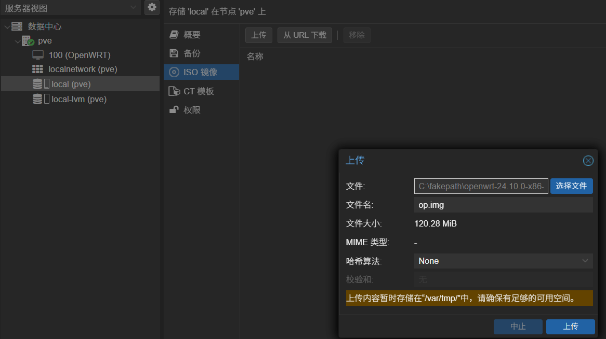
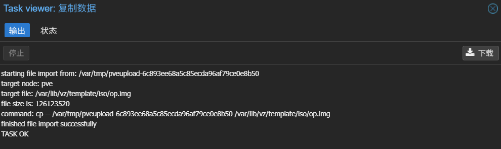
在PVE中创建虚拟机
在PVE系统管理界面，右上角点击新建虚拟机，然后按照下图进行设置
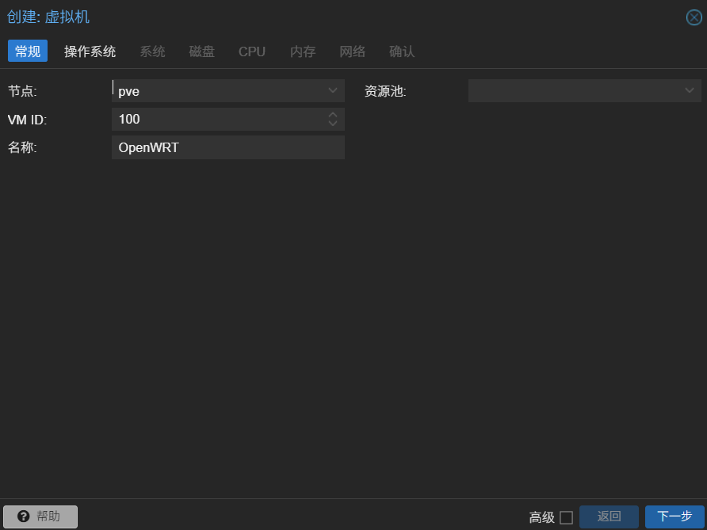
选择不使用任何介质
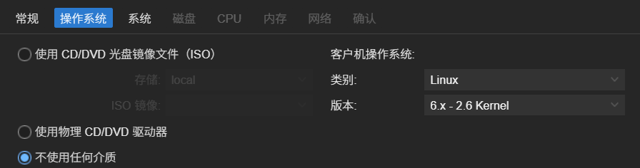
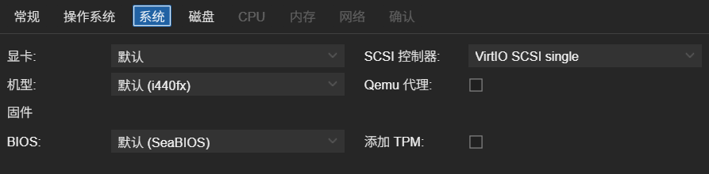
删除虚拟机默认生成的磁盘
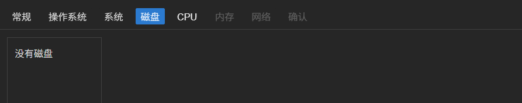
填写CPU核心数
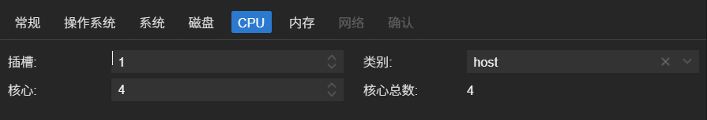
内存1到2GB即可
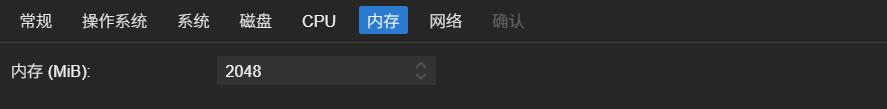
此处模型选择VirtIO，Linux的支持更好
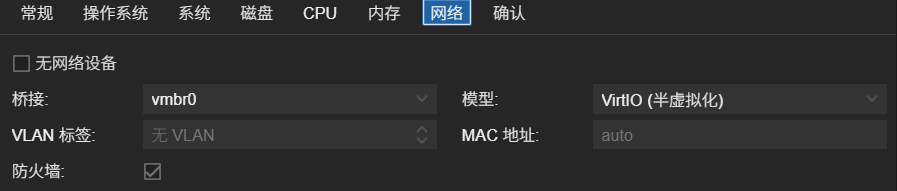
然后打开宿主机命令行，输入以下命令导入磁盘：
|
|
出现成功提示说明磁盘添加成功
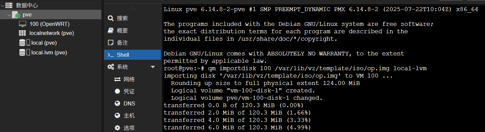
进入pve>100>硬件>未使用的磁盘0，点击添加
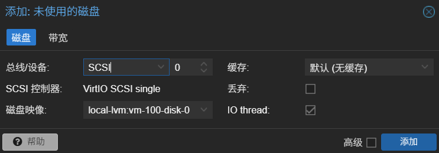
选中硬盘，选择磁盘操作>调整大小，将大小设置为5GB
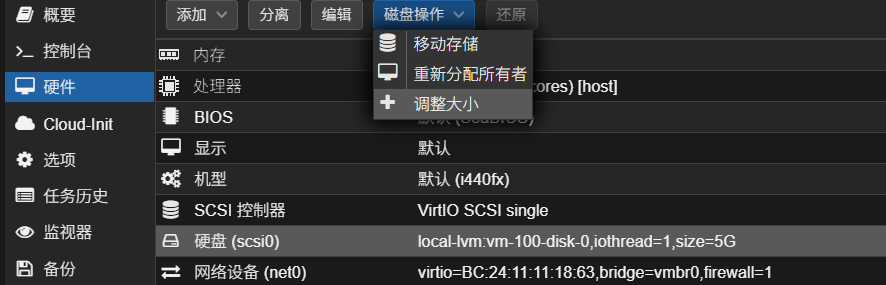
网络配置
虚拟网络拓扑
在路由器中，WAN口连接上游网络，LAN口提供局域网服务。在 PVE 虚拟机中运行 OpenWrt 时，需要先为虚拟机分配物理网卡，让 OpenWrt 识别并设置对应的WAN或LAN口，从而形成完整网络
进入pve>系统>网络>创建>Linux Bridge，然后选择好桥接端口，依次添加所有网口后，重启PVE
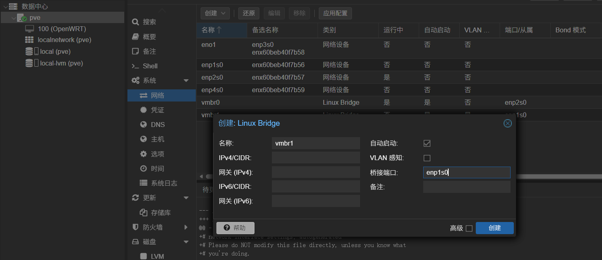
进入pve>100>硬件>添加>网络设备，将刚刚设置好的接口全部添加
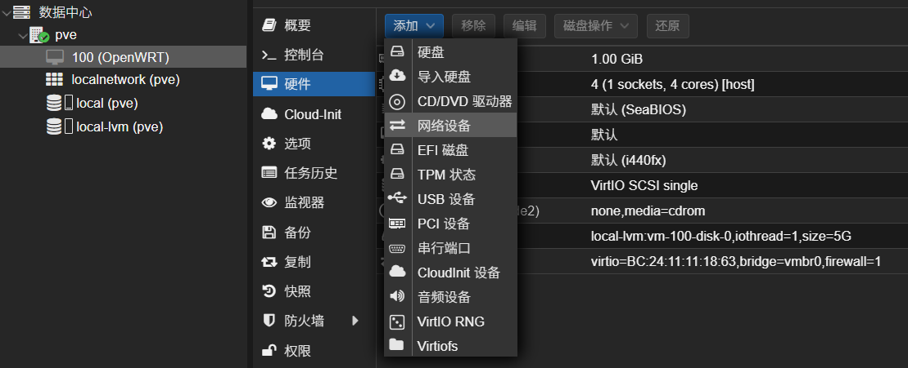
启动
在pve>100>选项>引导顺序中，将scsi0设置到第一位并启用
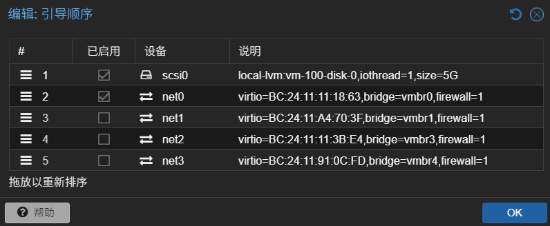
将开机自启动设为是
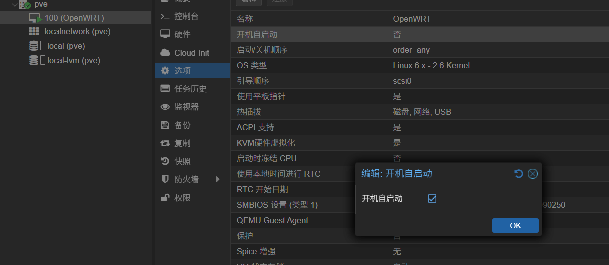
右上角启动虚拟机，进入控制台，等一会显示please press enter后按回车，显示如下画面就说明启动成功
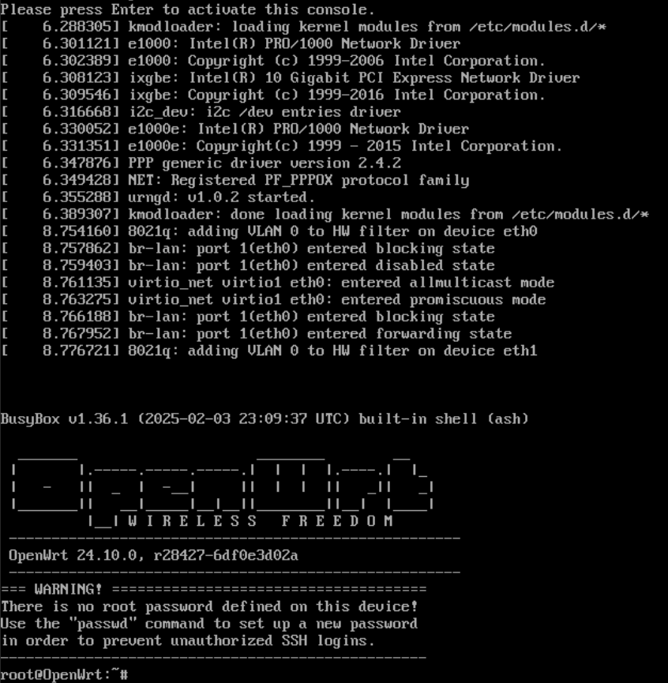
更改默认LAN IP
OpenWrt 默认使用 192.168.1.1 并开启 DHCP，直接接入原有网络往往会与光猫或旧主路由冲突。因为我准备让 OpenWrt 成为新的主路由，所以只需在首次启动后把 LAN 地址改成计划使用的网段。完成修改并重启后，就可以安全接入主网络，不会再出现地址或 DHCP 冲突
输入vi /etc/config/network，进入vi编辑画面后按i进入编辑状态，对LAN IP进行修改，我这里改成了192.168.10.1
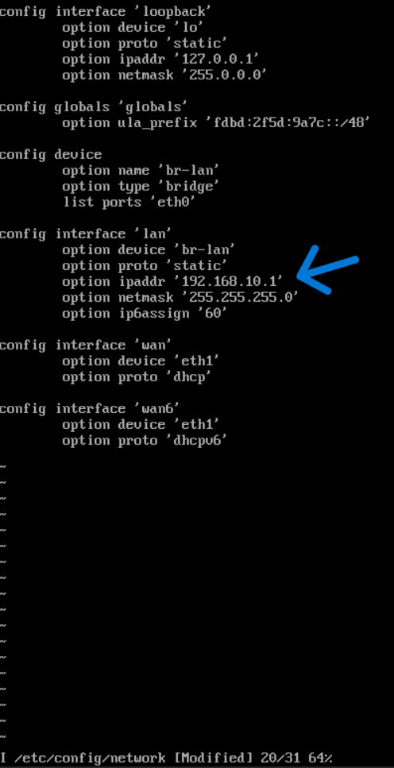
修改完毕后，按ESC键退出编辑模式，这时输入:wq ，然后enter保存，最后输入reboot重启
浏览器访问设置的IP进入OpenWrt管理界面，输入密码登录，若无法访问可尝试此方法
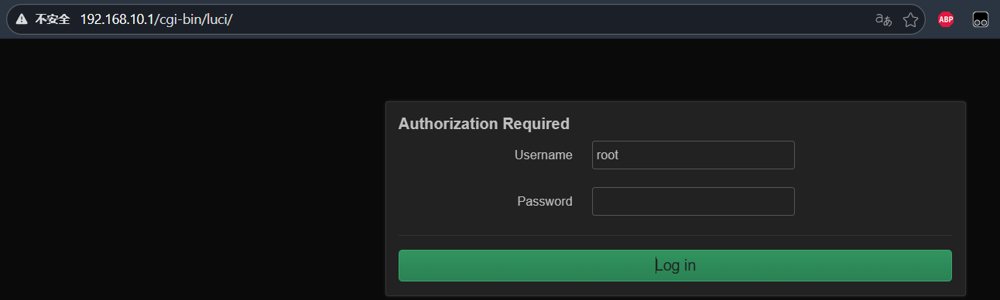
PVE 管理地址迁移
PVE 的管理口和 OpenWrt 的 LAN 默认不在同一个网段，设备进入 LAN 后就访问不到 PVE。把 PVE 管理 IP 改到 LAN 网段，任何 LAN 口就都能同时管理 PVE 和 OpenWrt
注意：在修改 vmbr0 前，必须确认 OpenWrt LAN 已经绑定到 vmbr0，否则 PVE 会直接从网络消失
进入pve>系统>网络>vmbr0，做如图修改，此时新的管理地址变成了https://192.168.10.99:8006/，当你可以同时进入OpenWRT和PVE的管理界面时，说明设置成功
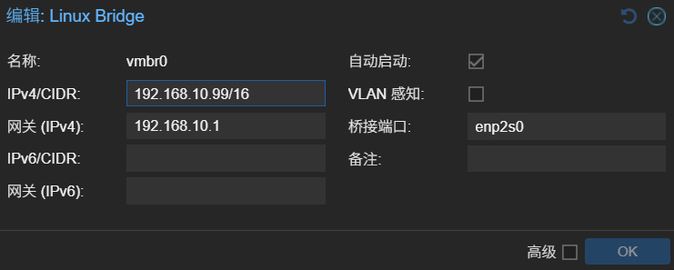
设置LAN口和WAN口
注意：OpenWRT中显示的网口编号不等于物理网口编号，具体编号需要看映射情况，推荐做一个下表来直观显示映射情况
| OpenWrt 接口 | PVE 桥接 | PVE 从属端口 | 物理网口 | 功能 |
|---|---|---|---|---|
| eth0 | vmbr0 | enp2s0 | eth1 | PVE 管理、LAN |
| eth1 | vmbr1 | enp1s0 | eth0 | WAN |
| eth2 | vmbr3 | enp3s0 | eth2 | LAN |
| eth3 | vmbr4 | enp4s0 | eth3 | LAN |
进入OpenWrt管理界面，network>interfaces>wan>edit，然后将device改成需要的WAN口，右下角保存
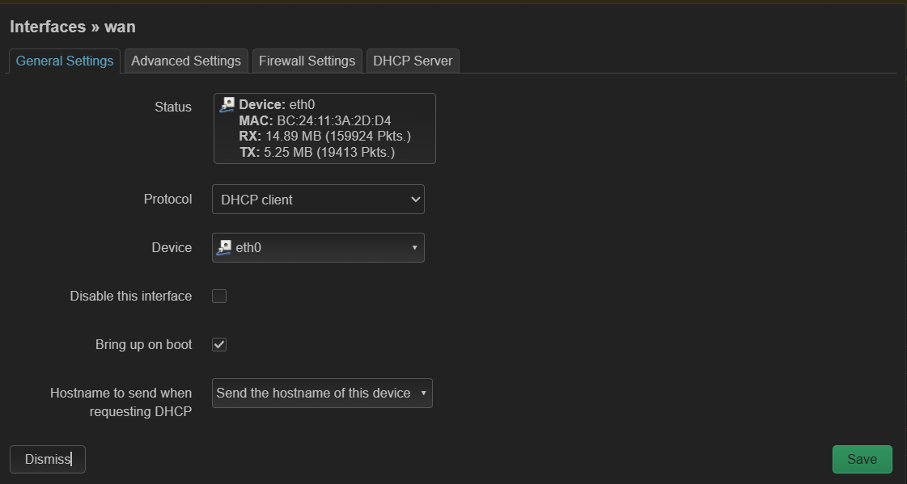
进入devices>br-lan>configure，勾选需要的LAN口，右下角保存，然后点击Save & Apply
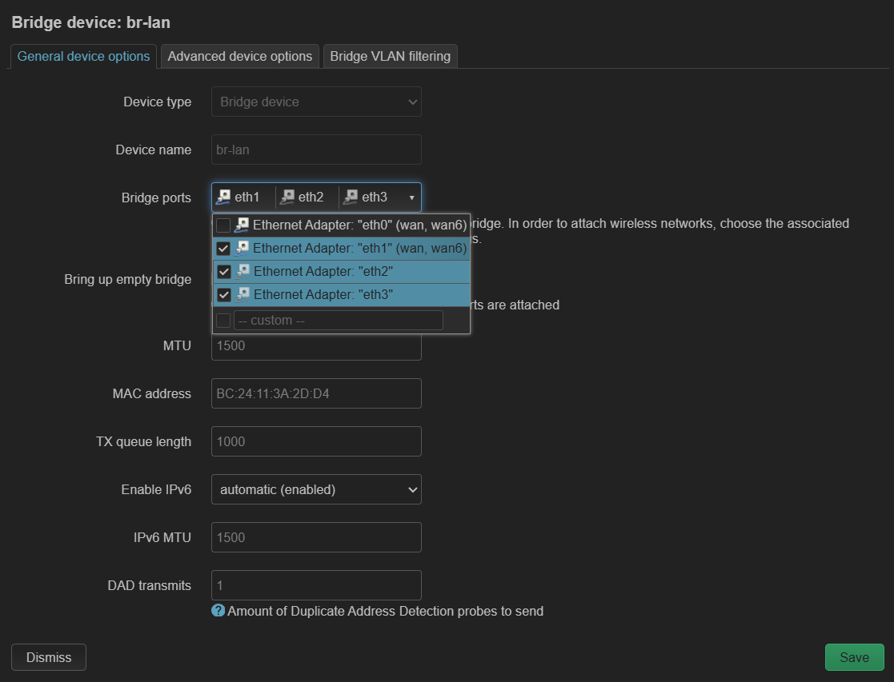
用网线将WAN口连接到光猫或者上级路由器，WAN这里显示IP地址说明配置完成，这时候就可以上网了
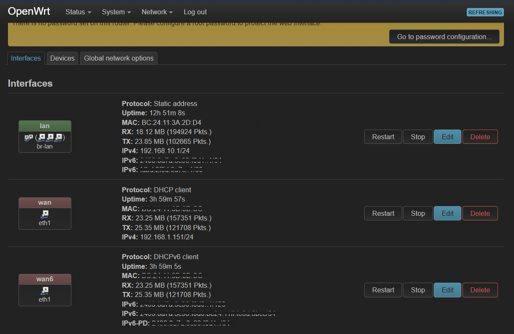
设置时区和 NTP
在系统>常规设置里把时区改成 Asia/Shanghai
在系统>时间同步里删除默认的NTP服务器，换成速度更快的
|
|
软件包管理配置
更换国内源
OpenWrt官方服务器在国外，直连更新安装会比较慢，所以要先更换国内源
进入OpenWrt管理界面，system>software>configure opkg
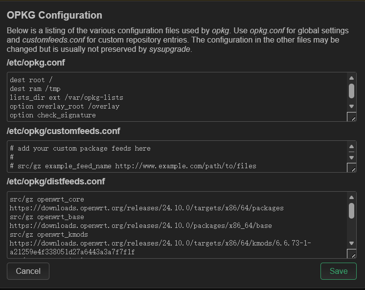
将/etc/opkg/distfeeds.conf中的地址，将网址中的downloads.openwrt.org全部替换成mirrors.tuna.tsinghua.edu.cn/openwrt，点击Save保存，我的版本修改好是这样的
|
|
更新插件列表
OpenWrt每次重启后可用插件列表都会清空，要安装或者更新插件需要手动更新
点击software界面的Update lists…
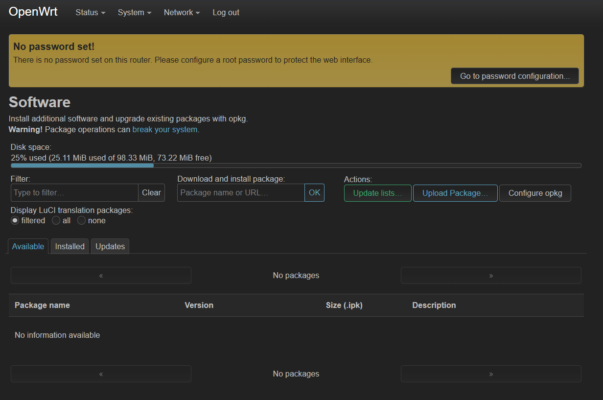
更新成功
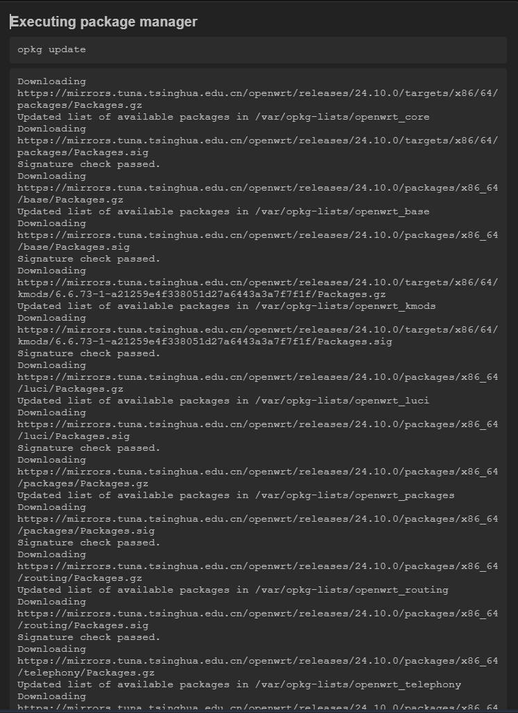
安装中文插件
在插件过滤框里面输入zh-cn筛选中文界面插件，然后点击下载
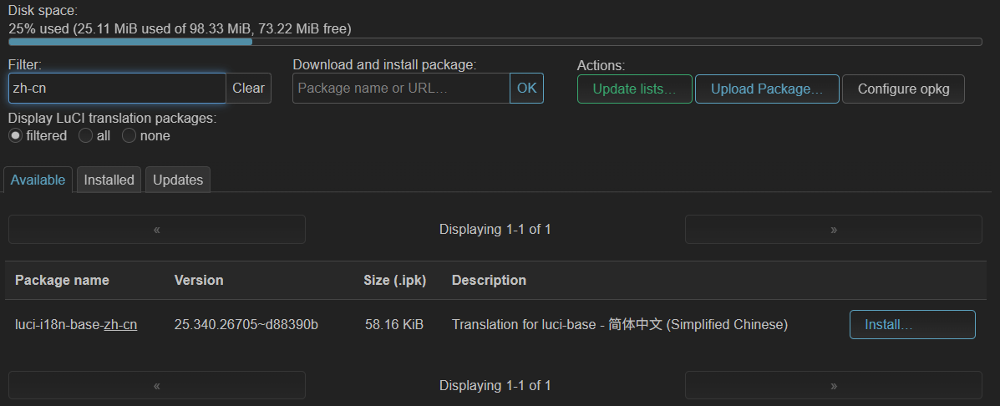
安装好后刷新，页面就变成了中文，此时再输入zh-cn筛选会看到更多中文插件
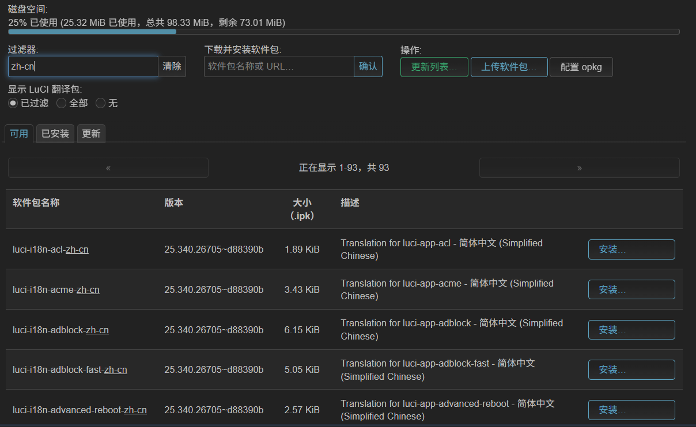
扩容
OpenWrt默认只会分配100M空间用于安装插件，所以需要给空间扩容
安装工具
进入pve>100>控制台，使用opkg安装cfdisk
|
|
安装openwrt硬盘挂载插件，安装完成后重启
|
|
重启完成后再次进入网页管理页面，打开系统下拉菜单，会多出来一个挂载点选项说明安装成功
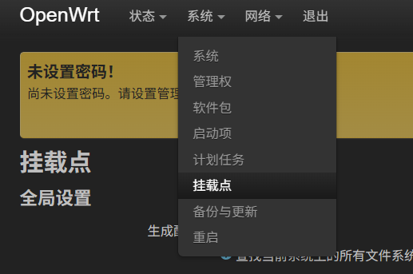
配置扩容分区
控制台输入cfdisk进入下方界面，选择Free space，下方选中New后回车，输入5G回车
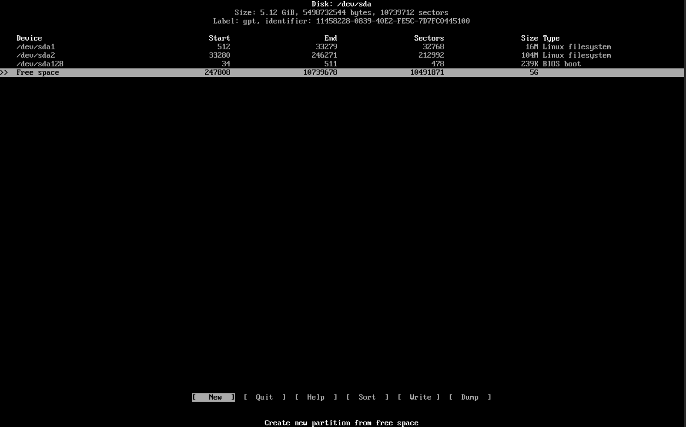
可以发现新分出了一块5G大小的空间/dev/sda3，选中后下方选择write回车，输入yes确定，然后选择Quit退出。
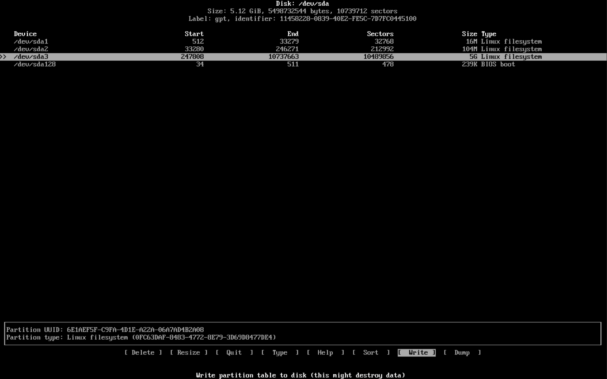
输入mkfs.ext4 /dev/sda3，用ext4的文件系统格式对该区域格式化
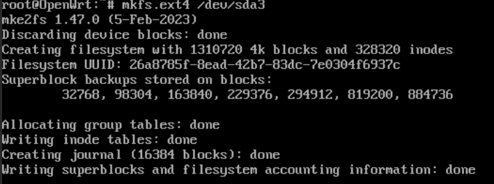
复制根目录
回到网页管理页面，进入系统>挂载点，点击挂载已连接的设备刷新硬盘信息，然后下拉到挂载点，可以看到/dev/sda3出现在最下方
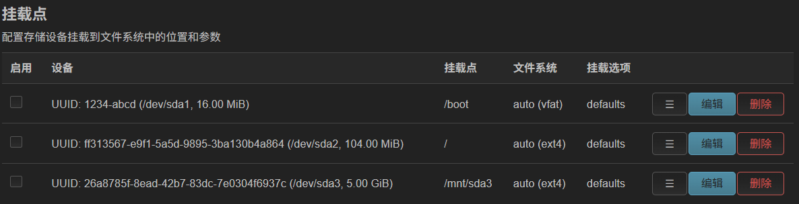
点击编辑，勾选启用，挂载点选择作为根文件系统使用，复制根目录准备中的内容并将中间的/dev/sda1改成自己的分区路径，我的是/dev/sda3。点击保存，再点击右下角保存并应用
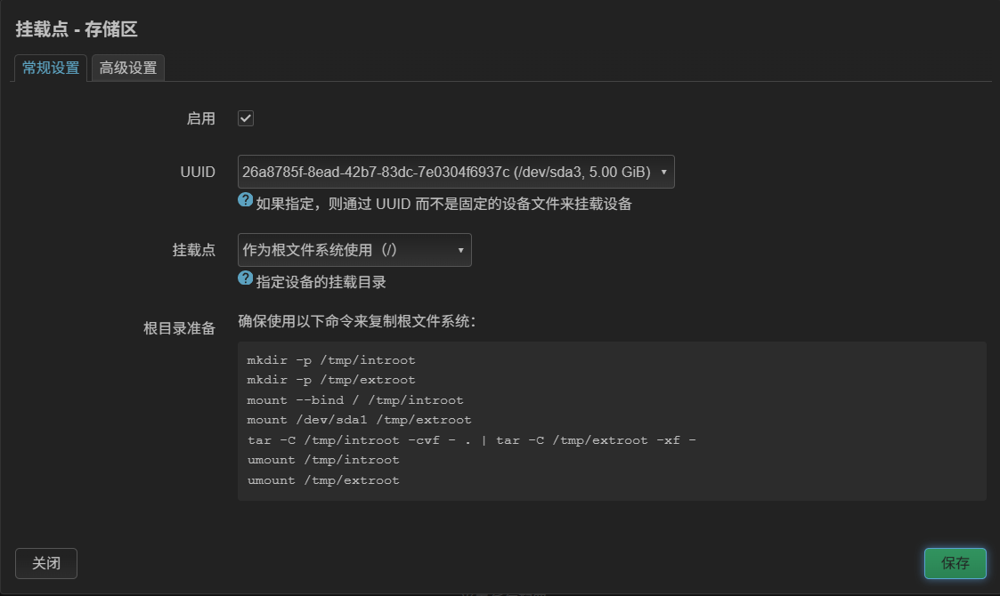
回到命令行，将修改完成的内容复制进去，这个操作是将原来根目录的文件全都复制到新的分区，然后重启
|
|
在网页管理页面，进入系统>软件包，可以看到磁盘空间变成了4.84GiB，扩容成功
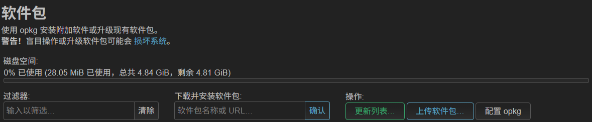
基础配置完成后，可以根据需求安装各类插件，详见OpenWrt插件推荐与配置
校园网认证
我学校的校园网是深澜认证，连接网络后会自动跳转到网页认证界面，输入学号和密码就可以上网。而认证失效的情况，大概一学期只会出现几次，所以我不需要安装自动认证脚本，只需要修改wan口的MAC地址为认证成功电脑的MAC地址即可
修改MAC地址
网络>设备>wan口，点击配置，把MAC地址改成电脑的MAC
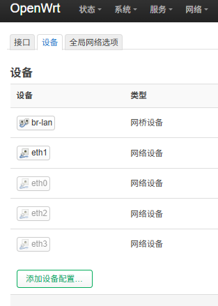
禁用IPv6
由于校园网不支持IPv6，如果不禁用，会无法访问支持IPv6的网站
在网络>接口中，删除WAN6这个接口
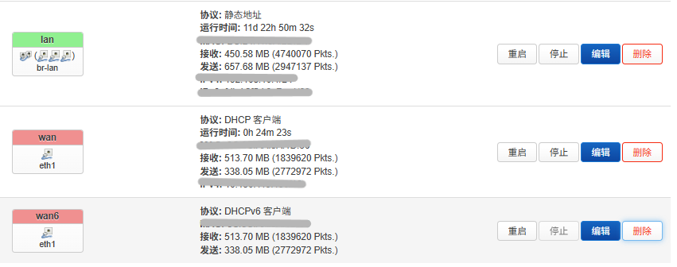
在LAN>编辑>DHCP服务器>IPv6设置中，将RA 服务，DHCPv6 服务 ，NDP 代理 选择 已禁用
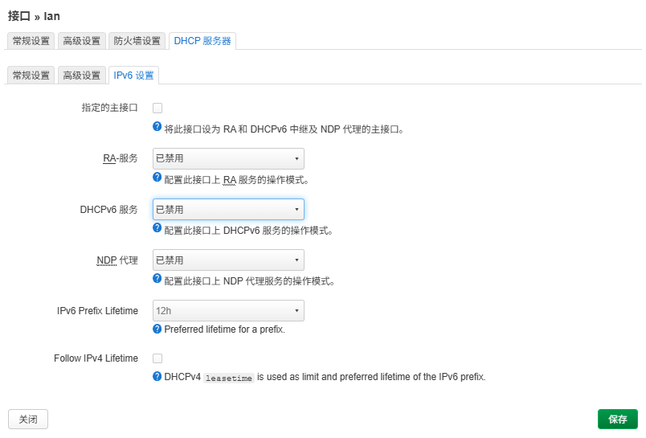
然后点击高级设置，把 IPv6 分配长度选择已禁用，最后保存并应用
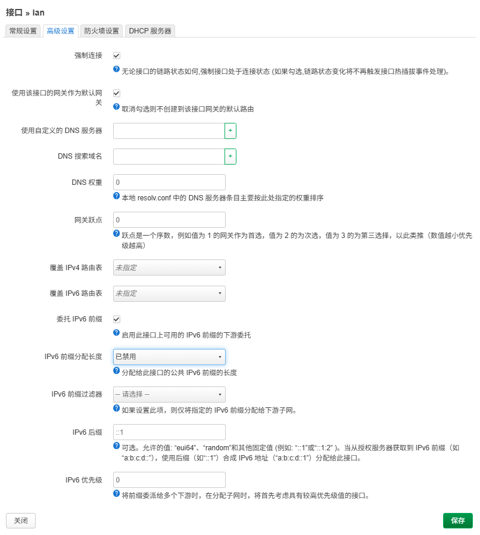
在网络>防火墙>通信规则中，把所有为入站IPv6或转发IPv6或出站IPv6的启用放弃勾选，然后保存并应用
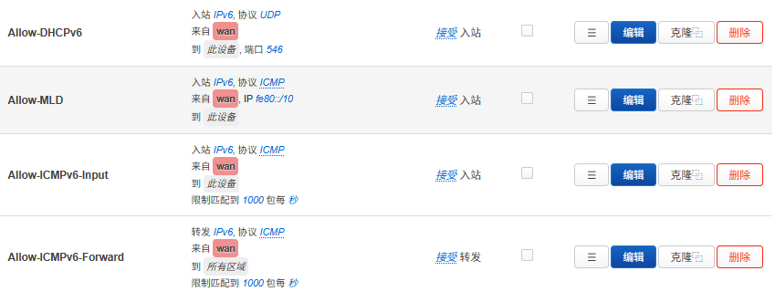
进入pve>100>控制台，输入下列命令，回车执行
|
|
1为禁止，0为启用，输入完命令没有提示，则完成
从如下两部分命令中选择一部分输入
- 所有接口禁用ipv6
|
|
- 禁用某一个指定接口的IPv6（例如：eh0）
|
|
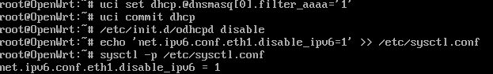
然后重启路由器，就可以访问之前打不开的网页了
参考
超详细,多图 PVE 安装 OpenWRT 教程(个人记录)_pve安装openwrt-CSDN博客
还不会软路由？x86主机安装原版OpenWrt就这么简单 - 知乎